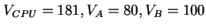
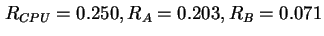

Next: กฎเวลาตอบสนองที่มีการปฏิสัมพันธ์กับผู้ใช้งาน (Interactive Response Time
Up: กฎเวลาตอบสนองทั่วไป (General Response Time
Previous: กฎเวลาตอบสนองทั่วไป (General Response Time
Contents
Index
จากตัวอย่างที่ผ่านมี ระบบ Time
Sharing มีค่าต่างๆ ดังต่อไปนี้


ค่าเวลาตอบสนองของระบบหาได้จาก
ค่าเวลาตอบสนองของระบบเท่ากับ 68.6 วินาที
Vara Varavithya
2002-03-09